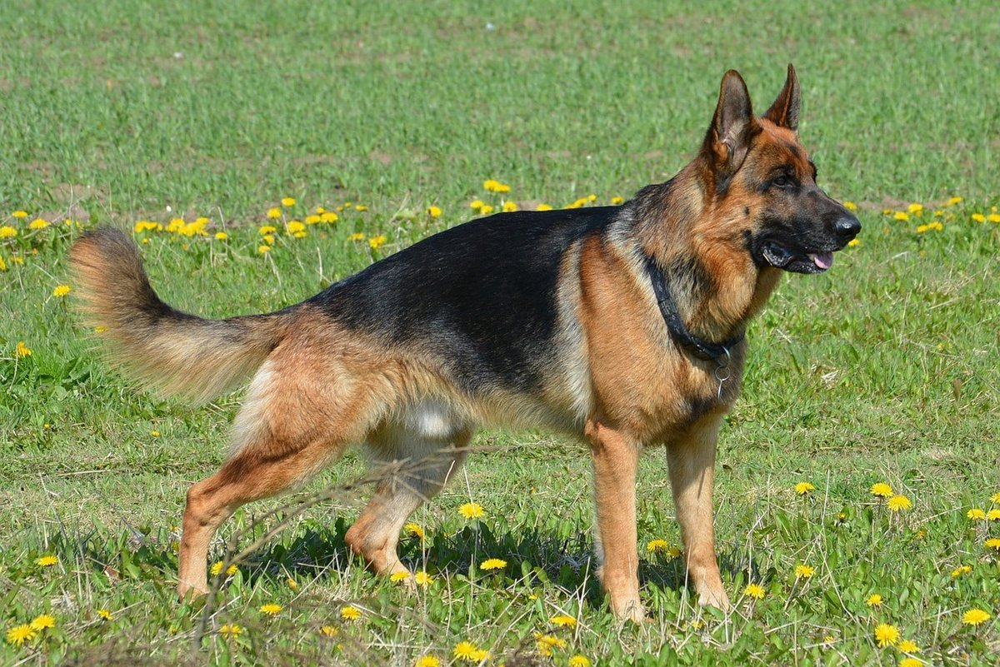
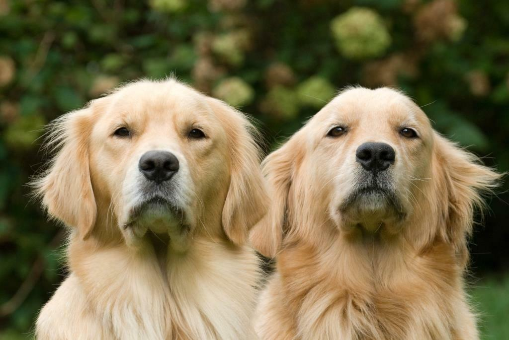

Лабрадор-ретривер — популярная порода собак, известная своим
дружелюбием, интеллектом и преданностью. Вот основные характеристики,
плюсы и минусы этой породы.
Характеристики:
Рост: кобели — 56–57 см, суки — 55–56 см.
Вес: кобели — 29–30 кг, суки — 27–29 кг.
Продолжительность жизни: 10–12 лет.
Цена: 50–100 тысяч рублей.
Плюсы:
Дружелюбие и доброта: лабрадоры хорошо ладят с людьми и другими
животными.
Преданность и общительность: лабрадоры хотят участвовать во всех
семейных мероприятиях.
Высокий интеллект: лабрадоры легко обучаются и выполняют различные
команды.
Активность и энергичность: лабрадоры нуждаются в регулярных
физических нагрузках и играх.
Минусы:
Потребность в общении: лабрадоры не переносят одиночества и
нуждаются в постоянном внимании хозяев.
Чрезмерная социальность: лабрадоры могут быть навязчивыми и
требовать постоянного внимания от своих хозяев.
Необходимость в дрессировке: лабрадоры могут проявлять упрямство и
непослушание, поэтому им требуется правильное воспитание и обучение.
Потребность в уходе: лабрадоры линяют и требуют регулярного ухода за
шерстью.
Немецкая овчарка

Немецкая овчарка — одна из самых известных и древних пород собак. Эта
порода отличается хорошими охранными качествами, умом и верностью. Вот
некоторые характеристики, плюсы и минусы породы немецкая овчарка.
Характеристики:
Рост: 55–65 см.
Вес: 22–40 кг.
Продолжительность жизни: 10–14 лет.
Шерсть: короткая, жёсткая, густая.
Плюсы:
Ум и обучаемость: немецкие овчарки легко обучаются новым командам и
навыкам.
Верность: немецкие овчарки очень преданы своим хозяевам и всегда
готовы защитить их.
Охранные качества: немецкие овчарки отличные сторожевые собаки и
хорошо справляются с охраной территории.
Энергичность: немецкие овчарки нуждаются в физической активности и
любят играть.
Минусы:
Необходимость дрессировки: немецкие овчарки нуждаются в правильном
воспитании и дрессировке, чтобы избежать проблем с поведением.
Потребность в физических нагрузках: немецкие овчарки нуждаются в
достаточном количестве упражнений и активности для поддержания
здоровья и формы.
Уход за шерстью: немецкие овчарки с короткой шерстью нуждаются в
минимальном уходе, но длинношёрстные требуют более тщательного
ухода.
Здоровье: немецкие овчарки могут быть подвержены некоторым
генетическим заболеваниям, таким как дисплазия тазобедренного
сустава и проблемы со зрением.
Золотистый ретривер

Золотистый ретривер — это порода собак, известная своим дружелюбием,
интеллектом и обучаемостью.Вот основные характеристики, плюсы и минусы
этой породы.
Характеристики:
Рост: сука — 50–56 см, кобель — 56–60 см.
Вес: сука — 25–37 кг, кобель — 27–41 кг.
Продолжительность жизни: 12–13 лет.
Шерсть: прямая или волнистая с водонепроницаемым подшёрстком.
Плюсы:
Дружелюбный характер: золотистые ретриверы хорошо ладят с людьми и
другими собаками.
Ум и обучаемость: они легко поддаются дрессировке и могут выполнять
различные команды и поручения.
Отсутствие агрессии: золотистые ретриверы не представляют опасности
для детей и других животных.
Любят быть в центре внимания: они открытые и общительные собаки.
Минусы:
Зависимость от людей: золотистые ретриверы плохо переносят
одиночество и изоляцию, поэтому подходят для семей с детьми и
домоседов.
Потребность в уходе: эти собаки сильно линяют два раза в год, что
требует регулярного ухода за шерстью.
Необходимость активности: золотистые ретриверы нуждаются в
регулярных прогулках и физической активности для поддержания
здоровья и благополучия.